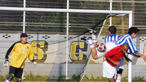

|
ASIJ, Monday 13th October
 (Woof! Just read Evan’s match report. Fine work sir. I’d like a large glass of whatever he’s been drinking, please barkeep! (Woof! Just read Evan’s match report. Fine work sir. I’d like a large glass of whatever he’s been drinking, please barkeep!
I think we’ll just keep it simple here, shall we…)
The rescheduling of last weekend’s match from the Saturday to the Monday unfortunately saw an already injury hit BEFC squad further robbed of regular first team players. This meant that about half of those who made it to ASIJ for the clash with BFC were making their season (and in several cases, team) debuts. While there was no lack of effort or commitment from the brave souls out there, ultimately a lack of cohesion and familiarity with each other and the positions people were often asked to play in (there was only one regular defender in the squad) along with the absence of certain big personalities (i.e. big mouths) cost us dearly and we were beaten (spanked, battered, thumped) for five unanswered goals. Indeed I think we only managed one proper shot in anger in the whole match (no, punting the ball goalwards from the kick – off does not count). BFC are a decent side with a few very good players and this was not the best time to be blooding new, erm blood.
Although the Embassy were under the cosh almost from the whistle the makeshift defence, heavily supported by the midfield and saved on many occasions by the evergreen Keith between the posts, held firm until almost the final minute of the first half when yet another ball in from the wing collided with some part of the BFC player and the BEFC defender and then the back of the net. It always hurts to concede so close to half time.
 Knowing that we had to score to get anything from the afternoon the Embassy had to try and take the game to BFC. However, as is too often the case when things aren’t going our way, the response was to punt hopeful balls forward rather than trying to play it out from the back. Even those screaming at teammates not to do so were doing it (I know I was). Gifting possession so easily hurt us, especially as the play was stretched as players tried to get forwards. There was a touch of fortune (or downright assistance from the Embassy’s players) in a few of the subsequent goals. A communication mix up between a stand-in defender and the ‘keeper allowed Evans for sneak in and lift the ball into the net, a cruel deflection left Keith stranded and worst of all, an inadvertently perfect, defense-splitting flick-on by our own midfield put BFC’s pacey winger through on goal unchallenged. However, in all honesty the score line was a fair reflection of their dominance and our inability to find even second gear. This was an afternoon to forget with almost no positives to be taken. Credit to BFC for taking advantage of the situation.
But be warned, fellows of the British Football Club, for this was not a fair account of what we are capable of. We shall see you in the rematch. First you rip-off our name, then you steal our colours (you are in your second strip next time!) and then you have the audacity to beat us 5 - 0. We owe you…
Report by Other Tim
|